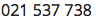

Jesse Thomas Lamb
- Email:
- Phone: 
Profile
I am a fast learner with an inquisitive mind who enjoys new challenges and opportunities to learn. I have a passion for website design and front end development and enjoy problem solving to achieve effective outcomes.
Technical Skills
Extensive software proficiency covering a wide variety of applications and technologies on both the front end and backend, including:
| Skill | Proficiency level | Years of experience | Last used |
|---|---|---|---|
| HTML | Very good | 8 | 2015 |
| CSS | Very good | 8 | 2015 |
| Javascript | Very good | 8 | 2015 |
| JQuery | Very good | 6 | 2015 |
| HTML5 | Very good | 4 | 2015 |
| CSS3 | Very good | 5 | 2015 |
| Google Maps API (v2/v3) | Very good | 3 | 2012 |
| User Interface/UX design | Very good | 5 | 2014 |
| Node.js | Proficient | 3 | 2015 |
| GIT | Proficient | 4 | 2015 |
| SVN | Proficient | 5 | 2014 |
| Graphics Design (Fireworks / Photoshop) | Proficient | 5 | 2014 |
| Postgres | Proficient | 4 | 2015 |
| PHP | Proficient | 5 | 2014 |
| MySQL | Proficient | 5 | 2014 |
| Zend Framework (PHP) | Proficient | 4 | 2011 |
| Ext.js/Sencha Touch | Proficient | 2 | 2011 |
| MongoDB | Proficient | 2 | 2013 |
| Ruby on Rails | Proficient | 1.5 | 2013 |
| Linux Server Administration | Fair | 2 | 2015 |
| Wordpress | Fair | 2 | 2014 |
| SQL Server | Fair | 1 | 2009 |
| C# ASP.net | Fair | 1 | 2009 |
Portfolio
Some of the front end work I've done over the past year at lululemon is viewable at http://www.okeydoke.net/portfolio/
Experience
Front End Web Developer - Lululemon / August 2013-August 2014
I spent most of my time working on front end projects implementing creative designs for the lululemon.com and ivivva.com websites, most of which are viewable under my portfolio section above.
Projects required communicating with with Business Owners, Creative, TechOp's, QA and other developers to reach successful outcomes using Agile and Scrum methodologies.
Other tasks included:
- Providing technical advise and time estimates to creative/design teams and PM's
- Implementing response designs using Bootstrap and CSS3
I also worked on back end projects including:
- Maintaining and updating content for a custom PHP framework
- Implementing redesign changes using PHP to the blog.lululemon.com Wordpress site
- Wordpress MySQL database merge scripts written in SQL, PHP and shell scripting
- Node.js base page/url checking script
- Helping other developers with environment set up: Apache configuration, MySQL, SVN setup, deploy process
- SVN used for source control
Windows 8 App Development (Contract Work) / June-July 2013
Creating Windows 8 App using Javascript, HTML5 and CSS/3 for Microsoft
Web Developer - Terralink International / 2011-April 2013
Main Responsibilities:
- Maintaining and monitoring performance of Postgres and MongoDB Databases
- Ruby on Rails development
- Front end design and development of websites
- Application deployments and server maintenance
- Providing after hours on call support for servers and applications
Some projects I worked on:
- Maintaining a dataset based on 3rd party API's
- Maintaining existing PHP and Ruby on Rails web sites
- Data maintenance and data load scripts
- Creating front end for a rail apps using SCSS, bootstrap, jQuery. UI/UX design
- Node.js application with Postgres database fetching data from a 3rd party JSON API
Transferable Skills:
- UI/UX design
- Ruby on Rails development
- Server deployment scripts using Capistrano
- Linux server scripting
- Front end web development
- MongoDB and Postgres Administration
Front End Web Developer - Wialus Solutions / 2009-2011
Main Responsibilities:
Front end web development
Some projects I worked on:
- A cellular network coverage web application based around Google maps using jQuery, Ext.js. UI/UX design
- Internal time recording system for time-sheets - utilizing a flexible input system written in Javascript, allowing for multiple entry formats
- Setting up and implementing PHP Zend Framework for applications
- Public facing Website - set up database, created backend using PHP and Zend Framework. Was given design to work to, created CSS and HTML
- Majority of work was Ajax based web sites/applications using jQuery with a PHP and MySQL backend
Transferable Skills:
- Creating Performance focused modular JavaScript applications
- Mobile web application development
- Working with coordinate systems and mapping technologies
- Front end web application
- Google Maps API - Custom tile layers
- Setting up and creating PHP backend
- Multi-tasking - constantly working on different projects at the same time
Freelance Web Development / 2008-2009
Main Responsibilities:
A variety of differing jobs including
Working with PHP creating websites using SilverStripe.
C# based ASP.Net development for Alcoholics Anonymous NZ website using Umbraco CMS.
Transferable Skills:
- Knowledge of both SliverStripe and Umbraco CMS
- Working with MS SQL and MS Access in ASP.Net
Web Developer - Allfields Customised Solutions / 2006-2008
Main Responsibilities:
- Required to develop web solutions using a variety of different technologies and languages, including PHP, mySQL, Visual Basic ASP, MSSQL, MS Access database using VBA
- Liaise with clients in order to develop web solutions
- Help to train new employees
- Work with a variety of different people in order to find out the requirements for each website
Education
Victoria University of Wellington: 2004 - 2007
Bachelor of Commerce and Administration
Information Systems & E-Commerce